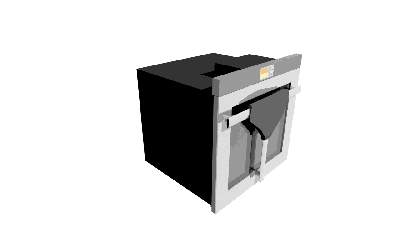

Electrodoméstico de Hogar
Solución aportada a la petición de crear un electrodoméstico de hogar según las bases del concurso DesignLab de Electrolux. En este proyecto me encargué del diseño 3D completo buscando soluciones a las distintas ideas que iban surgiendo en grupo, también de la creación de las imágenes y vídeos del proyecto, así como el diseño del Display.
Categorías:
- Proyecto
- En grupo
- Prácticas
Documento entregado:
Asignatura: Metodología del Diseño.
Curso: 2014-2015.
Integrantes del grupo: E.D.A., J.A.F.S., A.S.D.(yo) y M.J.S.G.
Nota final: 8.79.
Comentario:Durante el mes de Diciembre y la primera semana de Enero.El trabajo fue separado en distintas etapas:
- Elección de trabajo a desarrollar.
- Rediseño del electrodoméstico elegido.
- Creacíón de la memoria y el renderizado
Entre otras idéas nos gustó a todos la que propuso M.J.S.G. al exponernos la situación "problemática" que vivían ella y su compañera de piso: Para descongear una barra de pan tenían que encender todo el horno y consumían mucho.Nada más elegirla empezamos a buscar mejoras que añadir y una forma de que el espacio del horno cambiase de tamaño. Se eligió una bandeja que se pudiese poner en distintas posiciones, compatibilidad con la domótica y equipamiento de cámaras para mejorar el uso domótico.Todo ello vimos que cumplía con las bases del enunciado: Un electrodoméstico futurible, ya que no había nada parecido en el mercado que reuniese todas las características.Una vez que sabíamos qué íbamos a hacer nos pusimos a buscar materiales y a empezar a hacer distintos bocetos de enganches, ya que teníamos claro que serían bandejas con las resistencias que cambiasen de posición.
La búsqueda de elementos y materiales con los que hacer el horno se hizo basándose en las vivencias que he tenido con distintos elementos, búsquedas web y otras soluciones que aportaban casas de electrodomésticos importantes.El trabajo concluyó horas antes de la entrega por problemas personales en varios meimbros del grupo y por la corrección de errores vistos a última hora.A tener en cuenta:Este trabajo se diferencia con respecto a los otros que se expusieron por la alta calidad de las imágenes, superando los 480x320px del resto de grupos.En este trabajo todo el renderizado fue hecho por mi, siendo parte usado un modelo que encontré en internet para una escena de vídeo, el resto es todo obra personal.En la presentación las diapositivas 1, 5, 6, 7 y 12 aparecen videos que no se visualizan en esta página web.
Presentación del proyecto: